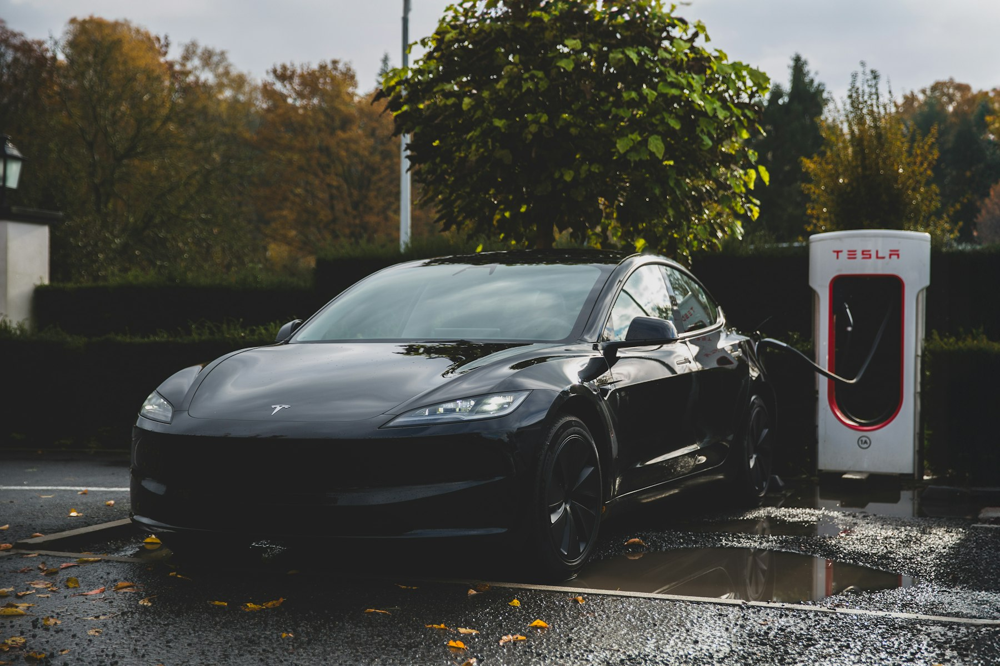

Tesla 台灣交付頁說明，交付中心取車流程約需 30-40 分鐘；請提早 5-10 分鐘抵達。

官方索引
Tesla 官網資訊，按新手順序整理
官網資訊很多，不適合從第一頁一路讀到最後。下面先把主題分清楚：購車、交付、App、車主手冊、充電、服務、保養、保固、OTA、道路救援。
新車基本車輛有限保固以先到者為準；電池與驅動單元依車型另有期間與里程。
Tesla 道路救援提供 24 小時全年無休支援；所在地不安全時，先聯絡緊急服務。
車輛交付且 App 存取權啟用後，可用手機鑰匙、充電、恆溫、付款與服務預約。
| 主題 | 新手要先懂 | 官方入口 | 本站判讀 |
|---|---|---|---|
| 車型、價格與下訂 | 價格、交期、配備與活動會變，永遠以 Tesla 訂購頁和訂購合約為準。 | Model Y、Model 3、訂購車輛 | 先確認停車與充電條件，再看車型配備，不要只看加速或續航。 |
| 交車準備 | 完成 Tesla 帳戶、付款、登記、交付地點、保險與換購資料。 | 交付當日 | 交車前先把家充、保險、停車與第一週充電路線處理好。 |
| Tesla App | 手機鑰匙、恆溫、充電限制、充電歷史、付款、服務預約都在 App。 | Tesla App 支援 | 交車前下載 App，交車後先完成手機鑰匙與付款方式。 |
| 車主手冊 | 手冊會依車型、地區與軟體版本不同；車機內的手冊最貼近你的車。 | Model Y 手冊、Model 3 手冊 | 先讀鑰匙、充電、安全、輪胎、拖吊與警示燈，不需要一次讀完。 |
| 家充與外部充電 | 家用充電、超充、目的地充電、第三方快充和轉接頭是不同情境。 | Tesla 充電、家用充電 | 能家充就先做家充；不能家充就先列出每週固定可用站點。 |
| 服務與維修 | 服務預約主要透過 Tesla App；部分維修可由行動服務處理。 | 服務、客戶服務 | 事故、鈑噴、料件等待和代步安排比例行保養更需要先想。 |
| 保養 | Tesla 不需要機油、燃油濾清器、火星塞或排放檢查，但輪胎與濾網仍要顧。 | 車輛保養 | 把胎壓、胎面、定位、濾網、煞車油檢測放進年度預算。 |
| 保固 | 基本車輛、SRS、電池與驅動單元、車體鏽蝕、零件維修各有期限。 | 車輛保固 | 買中古車或改裝充電設備前，先看保固排除與限制。 |
| OTA 與升級 | 軟體更新透過 Wi-Fi 下載；安裝期間不能開車，也不能回復到舊版本。 | 軟體更新、升級 | 更新前先留停車時間，更新後觀察一週耗電、雨刷、藍牙與輔助駕駛。 |
| 道路救援 | 故障、爆胎、車門反鎖等狀況可聯絡道路救援；緊急危險先找緊急服務。 | 道路救援說明、各地電話 | 把電話存在手機，也把拖吊模式和爆胎處理方式先讀過。 |
| 所有權轉移 | 第三方購車需在 Tesla App 新增車輛並索求所有權；一台車一次只有一個車主帳戶。 | 新增或移除車輛 | 中古車交付前確認所有權、超充、道路救援與前車主權限都已處理。 |
| 配件與線上商店 | 原廠配件、充電產品、輪圈輪胎套件與保固條件分開看。 | 充電產品、線上商店保固 | 充電轉接頭先確認車端規格，配件不要一開始就全買滿。 |
購車前
下訂前先把生活條件算清楚
Tesla 官網會告訴你怎麼訂車，但車主自己要先回答：停哪裡、怎麼充、誰會開、每年跑多少、保險和輪胎能不能接受。
先試駕，再決定車型
官網可預約試駕。試駕時不要只感受加速，請確認視野、座椅、懸吊、車機操作、家人上下車和後廂使用。
訂購 Tesla 車輛先看固定充電條件
有固定車位者優先評估壁掛式充電座與施工；沒有家充者先列公司、商場、超充和第三方快充路線。
家用充電訂單資料要早填完
下訂後登入 Tesla 帳戶，依官方指示處理交付地點、付款方式、登記資料與換購細節，避免配車後卡流程。
訂購流程優惠和費用以結帳頁為準
推薦碼、活動、訂購費、貸款或租賃條件都可能變動。本站可提供入口，但正式條件只看 Tesla 結帳頁與合約。
我的推薦連結下訂前檢查
不急著下訂，先問完這 8 題
- 住家或公司是否能穩定充電？如果不能，最近可用快充站在哪裡？
- 社區是否允許施工？電容量、管委會、配線、消防與計費方式是否確認？
- 年行駛里程、高速比例、長途頻率和假日用車型態是什麼？
- 保險、輪胎、停車費、超充費、充電線材和轉接頭是否一起算？
- 家人是否接受長途多停一次充電，以及車機操作方式？
- 服務中心、鈑噴資源和拖吊距離是否符合你的所在地？
- 需要兒童座椅、寵物、露營、長途載物或公司報帳嗎？
- 是否要買新車、展示車、認證中古車或第三方中古車？保固差異是否看過？
交車
交車不是儀式，是第一次真正接手車
Tesla 台灣交付頁建議交付前先看教學影片、家用充電、超充和車主手冊。交付中心取車時，訂購人或登記人要出示政府核發有效證件並簽名。
App、帳戶、付款、保險
下載 Tesla App，用下訂帳號登入，處理登記、交付地點、付款與任意險。交車前先確認家充或第一週外部充電方案。
文件、車輛、物品、教學
帶有效證件，確認車身、內裝、鑰匙卡、充電與隨車物品。不要急著開走，先完成手機鑰匙與基本操作。
先設定安全與充電
回家後設定充電上限、哨兵模式、行車紀錄器、駕駛人設定、胎壓監控、常用導航和付款方式。
第一週
前七天先把常用功能設定好
第一週不要急著研究所有進階功能。先把車能穩定開、穩定充、穩定付款、穩定預約服務，其他功能慢慢熟悉。
手機鑰匙與備用鑰匙卡
設定手機鑰匙，確認 Tesla App 在背景運作。鑰匙卡放在固定位置，讓家人也知道緊急時怎麼用。
充電上限與排程
設定日常充電上限和離峰時間。第一次用超充時，確認付款方式、充電中止方式和佔用費規則。
駕駛人與安全設定
設定駕駛人座椅、後視鏡、方向盤、再生煞車習慣、兒童安全鎖、行車紀錄器與哨兵模式。
網路、藍牙與 Wi-Fi
配對手機與藍牙，讓車在停車處可連 Wi-Fi。OTA 更新和部分功能會需要穩定 Wi-Fi。
胎壓與輪胎
記錄冷胎胎壓、輪胎型號與輪圈尺寸。電動車扭力和車重會讓輪胎成為重要耗材。
服務預約與救援電話
知道怎麼在 App 預約服務，把道路救援電話存進手機，並先看拖吊與爆胎注意事項。
充電
新手最容易搞混的是充電，不是開車
Tesla 官網把充電分成家用、工作場所、超級充電站、旅途中和目的地充電。台灣車主還要額外注意車端規格與轉接頭。
慢充是日常主力
壁掛式充電座、行動充電器、社區或公司慢充，重點不是速度，而是每天能否穩定補回通勤耗電。
家用充電長途與補位，不是唯一解
超充適合長途與臨時補電。繁忙站點可能有擁堵費或充電完成後的費用，使用前看 App 站點資訊。
超充費用確認 CCS2 與轉接頭
第三方站點要確認槍頭、支付方式、營業時間、停車費和尖離峰價格。轉接頭用途不能混用。
Tesla 充電產品住宿和停車場能省很多時間
長途過夜時，慢充比途中多停一站更舒服。訂房前確認車位、槍頭、計費、是否保留車位和是否可過夜。
Tesla 充電充電規則
新手先記這幾條
這些不是完整手冊，只是第一個月最常用的判斷規則。完整安全指示仍以車主手冊和產品頁為準。
- 日常充電先追求穩定，不追求每次都充到最高。
- 快充功率會受車款、電池溫度、目前電量、站點規格與路線預熱影響。
- 看到「有充電樁」不代表你的車一定能充，要看車端規格、槍頭與轉接頭用途。
- 高電流快充不要使用不明轉接頭或來源不明設備。
- 出遠門前要準備備用站點，並把回程、天氣、載重和山路耗電算進去。
- 若無家充，把停車費、等待時間和會員 App 成本也算入充電成本。
保養與保固
不用換機油，不等於不用養車
Tesla 官網明確說明電動車不需要傳統燃油車的機油、燃油濾清器、火星塞或排放檢查。但輪胎、濾網、煞車油檢測、雨刷、空調與保險仍是車主成本。
| 項目 | 官方重點 | 新手怎麼記 |
|---|---|---|
| 基本車輛有限保固 | 4 年或 80,000 公里，以先到者為準。 | 交車後立刻記下保固到期日和里程。 |
| SRS 安全氣囊系統 | 5 年或 100,000 公里，以先到者為準。 | 事故或警示燈不要拖，直接安排服務。 |
| Model 3 / Y 電池與驅動單元 | 依車型為 8 年或 160,000 至 192,000 公里，保固期內至少保持 70% 電池容量。 | 買中古車時一定核對車型、里程、保固剩餘與電池條款。 |
| 車體鏽蝕 | 12 年且不限里程，涵蓋材料或工藝缺陷導致的生鏽孔洞。 | 一般刮傷、碰撞、外部因素不等於鏽蝕保固。 |
| 濾網與輪胎 | 保養頁和車主手冊提供建議週期；輪胎換位、胎面差異、胎壓要定期檢查。 | 輪胎是 Tesla 新手最容易低估的耗材。 |
| 零件、鈑金與烤漆 | 直接向 Tesla 購買或安裝的零件另有零件、車體與烤漆維修有限保固。 | 事故維修要確認原廠、授權鈑噴、保險與料件時間。 |
把輪胎放進年度成本
電動車車重與扭力都高，輪胎磨耗比很多新手想像快。胎壓、定位與駕駛方式都會影響壽命。
第三方設備要小心
Tesla 保固頁提醒，第三方車輛轉接器或充電器造成的損壞不在有限保固涵蓋範圍。
保固會跟著條件走
認證中古車、第三方中古車、所有權轉移和電池剩餘保固都要分開看，不要只問年份。
服務與道路救援
知道怎麼求助，比知道功能名稱更重要
Tesla 官網把車輛維修、行動服務、遠端診斷、客戶服務和道路救援分成不同入口。新手先記住：一般服務用 App，路邊無法行駛用道路救援，地點不安全先找緊急服務。
軟體、帳戶與所有權
Tesla 是車，也是帳戶和軟體服務
新手常以為交車就結束，其實交車後還有 App 權限、付款方式、駕駛人、OTA、升級購買、所有權轉移與帳戶安全。
更新前留停車時間
軟體更新分下載和安裝。安裝階段不能駕駛，若車輛正在充電，安裝期間會停止充電並在完成後繼續。
更新需要穩定連線
Tesla 建議保持 Wi-Fi 連線以接收軟體更新；新車交付後可能會在 App 通知首次更新。
付款、充電、服務都在 App
App 可管理充電限制、充電紀錄、付款方式、線上商店訂單、服務預約、恆溫與手機鑰匙。
中古車要索求所有權
第三方購買 Tesla 時，需透過 Tesla App 新增車輛並索求所有權，才能取得完整 App 功能、超充與道路救援存取權。
車主手冊
車主手冊很厚，新手先照這份順序讀
Tesla 車主手冊會依車型、年式、地區和軟體版本更新。最準的是車內「控制」>「服務」>「車主手冊」。下面是新手閱讀順序，不是完整手冊替代品。
先能安全開走
鑰匙、車門、車窗、座椅、安全帶、兒童安全座椅、安全氣囊、觸控螢幕、車輛狀態。
每天會用到
Tesla App、Wi-Fi、藍牙、行車紀錄器、哨兵模式、導航、充電、能耗、恆溫、置物空間。
長途和特殊狀況
路線規劃、超充、拖吊、道路救援、爆胎、警示燈、維修預約、緊急解鎖和高電壓安全提醒。
再看進階功能
輔助駕駛、主動安全、軟體發行說明、升級功能、車輛規格、DIY 保養與配件限制。
官方來源
本頁用到的 Tesla 官方入口
這頁是車主版整理，不是 Tesla 官方網站。條款、價格、活動、車型、服務與規格異動時，一律以 Tesla 官方頁面和車輛隨附文件為準。
- 訂購 Tesla 車輛試駕、下訂、付款、交付資訊與家充申請提示。
- 交付當日交付中心、到府交付、文件、交車流程與交付前教學。
- Tesla App 支援手機鑰匙、充電、付款、服務預約、恆溫與充電紀錄。
- Tesla 帳戶支援帳戶、車主資源、服務預約與重要更新入口。
- Model Y 車主手冊台灣 Model Y 車主手冊，依車型與軟體版本更新。
- Model 3 車主手冊台灣 Model 3 車主手冊，依車型與軟體版本更新。
- Tesla 充電家用、日間、旅途中與目的地充電概覽。
- Tesla 家用充電住家、社區、壁掛式充電座、行動充電器與安裝說明。
- 超級充電站費用佔用費、擁堵費、寬限時間與台灣費用說明。
- Tesla 充電產品Type 2、TPC、CCS2、CCS1、J1772 與旅充產品入口。
- Tesla 服務遠端診斷、行動服務、服務中心與道路救援概覽。
- 客戶服務訂單、交付、帳戶、產品支援、道路救援與市場外服務。
- 車輛保養保養摘要、濾網、輪胎、煞車油與電動車保養說明。
- 車輛保固新車、中古車、電池、驅動單元、鏽蝕、零件與延長保固。
- 軟體更新OTA、Wi-Fi、安裝、更新偏好、故障排除與發行說明。
- 升級透過 Tesla App 購買適用升級與付款方式。
- 道路救援說明24 小時全年無休道路救援、涵蓋服務與要求方式。
- 道路救援電話各地道路救援電話；台灣免付費電話 0809 007518。
- 新增或移除車輛第三方購車、所有權轉移、駕駛人新增與 App 存取權。
- Tesla 線上商店保固原廠配件、直接配送配件、安裝服務與保固範圍。